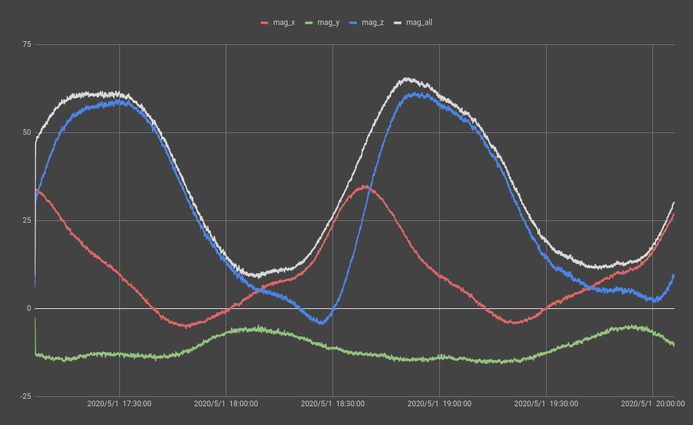

歐洲太空總署的 AstroPi 比賽
2020-07-26
前一陣子聽朋友講到 AstroPi 這個活動，聽起來還不錯所以就拉著學校的機器人社來一起做。
AstroPi 是一個 ESA 辦的，讓國高中生一個機會來寫程式，給太空站裡的一台樹莓派上跑。參加的團隊需要設計一個用樹莓派上 SenseHAT 的加速度計、磁力計、陀螺儀、溫濕度計，氣壓表和相機的實驗，然後把它寫成一個 Python 程式。這個程式會在太空站上跑三小時，產生的紀錄檔會被傳回來給我們寫報告。
ESA 的網站上說報告寫的好，前十名有獎品。不過我們都不怎麼愛寫報告，所以把太空照片來當獎品就夠了。
實驗內容我想的，是想看看在太空上面跑的電腦會不會比較容易當機。軌道上因為比較少地球大氣層跟磁場的保護，太陽風跟宇宙射線什麼的都會比較強。這些輻射可能會讓樹莓派當機重啟或是改變記憶體裡面的內容。
由於規定說程式只能用 Python 寫，我就想說建一個很大的 NumPy 陣列，然後用 zlib 的 adler32 算法給它算驗證碼（adler32 我測試比 hashlib 的算法快一點）。每隔一陣子重新計算一遍來和之前的驗證碼比較就能知道記憶體內容有沒有變化。我後來把他變成兩個陣列，一個填1，一個填0，這樣就能知道0跟1哪個比較容被改變。
這個程式同時還會把時間寫到一個檔案裡，這樣如果當機了，我們看這個檔案就能知道。當然，各種感應器的資料也有紀錄，不過最重要的還是拍照片，每分鐘會拍一張照並用 Ephem 獲得太空站位置然後寫到照片的 GPS 資料中。
我程式四月底送了出去，然後在五月中拿到了結果。根據紀錄，我們的程式在 5月1日 時從 17:06:14 UTC 跑到了 20:06:03 UTC，期間繞了軌道大約兩圈。我有做了個 Google 地球的專案，可以在 Google 地球裡打開看。
實際的實驗結果是什麼都沒有發生，我們的實驗程式很順利的從頭跑到了底，記憶體裡的資料也沒有被改變。不過我們從一開始就認為這個結果最有可能，因為這個 AstroPi 活動用的樹莓派是被放在太空站內部的一個鋁盒中。太空站本身的外牆跟它加起來能夠擋下大部分的輻射粒子。雖然說在程式執行當中太空站有飛過了在南大西洋的 SAA 兩次，但是那裡的粒子還是不足以造成樹莓派當機。
雖說實驗結果挺無聊，拍到的照片倒是蠻酷的，這裡就放個幾張：
有一個我覺的蠻有趣的資料是磁力計的資料，從圖表上看可以看到偵測到的磁場隨著太空站繞著地球而變化。把時間跟太空站的位置比對可以看到兩次低谷都是在這前講的 SAA 上紀錄到的。 
總之，我覺得自己的程式在外太空跑過很酷，然後地球從太空看很好看。
對了，最後我們的報告沒得獎。